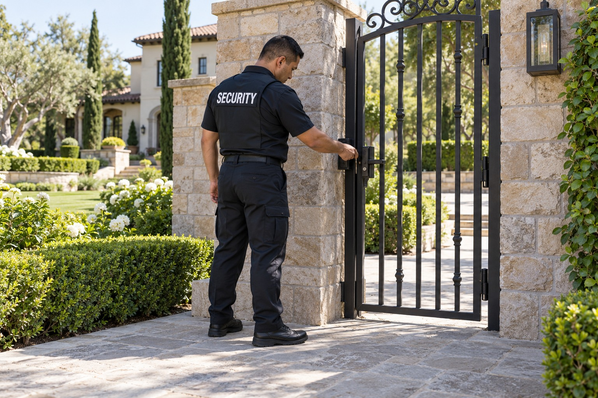

Private Homes and Estates

A private home may need a security presence at an entrance, across estate grounds or for a particular period when the owner wants additional property support. The service should respect the household’s normal use of the home. Security personnel need clearly defined responsibilities rather than an assumption that they are also household staff.
Security for the Household and Its Property
Paradigm reviews the property with the homeowner or authorized representative. A gate assignment differs from broader property observation, and both differ from protecting an individual away from the residence. Defining those purposes helps the client understand the service available without publishing private household information.
Gate Responsibilities and Property Observation
Residential security can support authorized visitor access, communication with the household and observation of estate areas included in the assignment. Responsibilities may involve the gate or other property spaces agreed with the client. The public description does not disclose resident routines, access arrangements or coverage methods.
Security personnel can communicate concerns about unwanted visitors, disturbances or incidents affecting the property. They can document relevant observations within the agreed role. Decisions about household guests and property use remain with the authorized resident or representative, while any matter requiring emergency services goes to the appropriate responders.
Working Alongside Existing Property Services
A home may already have an alarm provider, property manager or other service personnel. Paradigm can review how the security assignment relates to those existing roles. Alarm related support must be specifically confirmed rather than interpreted as a guarantee of a particular arrival time or a replacement for the monitoring provider.
Privacy is central to the service relationship. Personnel presentation and the scope of household interaction are reviewed directly with the client. BSIS publishes California security guard registration requirements. Assignment suitability and the responsibilities of any armed or unarmed coverage are confirmed for the property rather than assumed from the size or value of the home.
Private Residential Security Across Both Counties
Paradigm serves homeowners and estate representatives in Los Angeles County and San Bernardino County. Inquiries can involve ongoing property coverage or a temporary need connected with travel, renovations or a private function. Each request is considered according to the service required and the responsibilities involved.
Contact Paradigm to describe the property and the support you are seeking. We will review entrance duties, property observation and the relationship with your authorized household contacts. Personal routines, visitor information and site specific arrangements remain within the private consultation rather than becoming public service content.